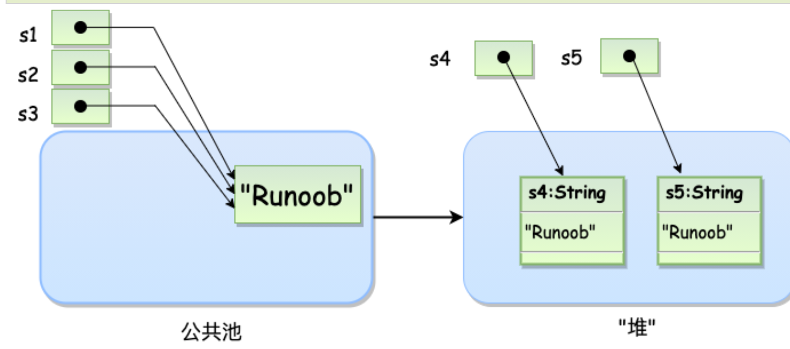

java基本语法知识补充积累
java基本语法知识补充积累
内部类
非静态内部类
非静态内部类是一个类中嵌套着另外一个类。 它有访问外部类成员的权限， 通常被称为内部类。
由于内部类嵌套在外部类中，因此必须首先实例化外部类，然后创建内部类的对象来实现。
1 | class OuterClass { |
私有的内部类
内部类可以使用 private 或 protected 来修饰，如果你不希望内部类被外部类访问可以使用 private 修饰符：
1 | class OuterClass { |
这样就无法通过
1 | OuterClass.InnerClass myInner = myOuter.new InnerClass(); |
创建内部类
静态内部类
静态内部类可以使用 static 关键字定义，静态内部类我们不需要创建外部类来访问，可以直接访问它：
but静态内部类无法访问外部类的成员。
1 | class OuterClass { |
java的基本数据类型：
1 | 基本类型：byte 二进制位数：8 |
Java 常量
常量在程序运行时是不能被修改的。
在 Java 中使用 final 关键字来修饰常量，声明方式和变量类似：
1 | final double PI = 3.1415927; |
赋值，包括unicode也可以
1 | int decimal = 100; |
自动类型转换
1 | int i =128; |
类变量（静态变量）
有点类似于全局变量，定义必须要在方法之外：
1 | import java.io.*; |
访问控制
| 修饰符 | 当前类 | 同一包内 | 子孙类(同一包) | 子孙类(不同包) | 其他包 |
|---|---|---|---|---|---|
public |
Y | Y | Y | Y | Y |
protected |
Y | Y | Y | Y/N（说明） | N |
default |
Y | Y | Y | N | N |
private |
Y | N | N | N | N |
abstract 修饰符
抽象类：
抽象类不能用来实例化对象，声明抽象类的唯一目的是为了将来对该类进行扩充。
一个类不能同时被 abstract 和 final 修饰。如果一个类包含抽象方法，那么该类一定要声明为抽象类，否则将出现编译错误。
抽象类可以包含抽象方法和非抽象方法。
1 | abstract class Caravan{ |
抽象方法
抽象方法是一种没有任何实现的方法，该方法的具体实现由子类提供。
抽象方法不能被声明成 final 和 static。
任何继承抽象类的子类必须实现父类的所有抽象方法，除非该子类也是抽象类。
如果一个类包含若干个抽象方法，那么该类必须声明为抽象类。抽象类可以不包含抽象方法。
抽象方法的声明以分号结尾，例如：**public abstract sample();**。
1 | public abstract class SuperClass{ |
synchronized 修饰符
synchronized 关键字声明的方法同一时间只能被一个线程访问。synchronized 修饰符可以应用于四个访问修饰符。
transient 修饰符
序列化的对象包含被 transient 修饰的实例变量时，java 虚拟机(JVM)跳过该特定的变量。
该修饰符包含在定义变量的语句中，用来预处理类和变量的数据类型。
volatile 修饰符
volatile 修饰的成员变量在每次被线程访问时，都强制从共享内存中重新读取该成员变量的值。而且，当成员变量发生变化时，会强制线程将变化值回写到共享内存。这样在任何时刻，两个不同的线程总是看到某个成员变量的同一个值。
一个 volatile 对象引用可能是 null。有点类似于锁变量
1 | public class MyRunnable implements Runnable |
通常情况下，在一个线程调用 run() 方法（在 Runnable 开启的线程），在另一个线程调用 stop() 方法。 如果 *第一行* 中缓冲区的 active 值被使用，那么在 *第二行* 的 active 值为 false 时循环不会停止。但是以上代码中我们使用了 volatile 修饰 active，所以该循环会停止。
Java Math 类
| 序号 | 方法与描述 |
|---|---|
| 1 | xxxValue() 将 Number 对象转换为xxx数据类型的值并返回。 |
| 2 | compareTo() 将number对象与参数比较。 |
| 3 | equals() 判断number对象是否与参数相等。 |
| 4 | valueOf() 返回一个 Number 对象指定的内置数据类型 |
| 5 | toString() 以字符串形式返回值。 |
| 6 | parseInt() 将字符串解析为int类型。 |
| 7 | abs() 返回参数的绝对值。 |
| 8 | ceil() 返回大于等于( >= )给定参数的的最小整数，类型为双精度浮点型。 |
| 9 | floor() 返回小于等于（<=）给定参数的最大整数 。 |
| 10 | rint() 返回与参数最接近的整数。返回类型为double。 |
| 11 | round() 它表示四舍五入，算法为 **Math.floor(x+0.5)**，即将原来的数字加上 0.5 后再向下取整，所以，Math.round(11.5) 的结果为12，Math.round(-11.5) 的结果为-11。 |
| 12 | min() 返回两个参数中的最小值。 |
| 13 | max() 返回两个参数中的最大值。 |
| 14 | exp() 返回自然数底数e的参数次方。 |
| 15 | log() 返回参数的自然数底数的对数值。 |
| 16 | pow() 返回第一个参数的第二个参数次方。 |
| 17 | sqrt() 求参数的算术平方根。 |
| 18 | sin() 求指定double类型参数的正弦值。 |
| 19 | cos() 求指定double类型参数的余弦值。 |
| 20 | tan() 求指定double类型参数的正切值。 |
| 21 | asin() 求指定double类型参数的反正弦值。 |
| 22 | acos() 求指定double类型参数的反余弦值。 |
| 23 | atan() 求指定double类型参数的反正切值。 |
| 24 | atan2() 将笛卡尔坐标转换为极坐标，并返回极坐标的角度值。 |
| 25 | toDegrees() 将参数转化为角度。 |
| 26 | toRadians() 将角度转换为弧度。 |
| 27 | random() 返回一个随机数。 |
Character 方法
下面是Character类的方法：（char是Character类的一个对象而已）
| 序号 | 方法与描述 |
|---|---|
| 1 | isLetter() 是否是一个字母 |
| 2 | isDigit() 是否是一个数字字符 |
| 3 | isWhitespace() 是否是一个空白字符 |
| 4 | isUpperCase() 是否是大写字母 |
| 5 | isLowerCase() 是否是小写字母 |
| 6 | toUpperCase() 指定字母的大写形式 |
| 7 | toLowerCase() 指定字母的小写形式 |
| 8 | toString() 返回字符的字符串形式，字符串的长度仅为1 |
区别再解读：*Character是char的包装类,就像Integer和int ，以及Long和long一样。*
****包装类和基本类型可以自动转换****（虽然我还是不是很能明白）
1 | char ch='a'; |
Java String 类
创建字符串
1 | String str = "Runoob"; |
String 创建的字符串存储在公共池中，而 new 创建的字符串对象在堆上：
1 | String s1 = "Runoob"; // String 直接创建 |

还可以用字符来构造字符串
1 | char[] helloArray = { 'r', 'u', 'n', 'o', 'o', 'b'}; |
字符串长度：
1 | str.length() |
字符串连接
1 | string1.concat(string2); |
String 方法
| SN(序号) | 方法描述 |
|---|---|
| 1 | char charAt(int index) 返回指定索引处的 char 值。 |
| 2 | int compareTo(Object o) 把这个字符串和另一个对象比较。 |
| 3 | int compareTo(String anotherString) 按字典顺序比较两个字符串。 |
| 4 | int compareToIgnoreCase(String str) 按字典顺序比较两个字符串，不考虑大小写。 |
| 5 | String concat(String str) 将指定字符串连接到此字符串的结尾。 |
| 6 | boolean contentEquals(StringBuffer sb) 当且仅当字符串与指定的StringBuffer有相同顺序的字符时候返回真。 |
| 7 | [static String copyValueOf(char] data) 返回指定数组中表示该字符序列的 String。 |
| 8 | [static String copyValueOf(char] data, int offset, int count) 返回指定数组中表示该字符序列的 String。 |
| 9 | boolean endsWith(String suffix) 测试此字符串是否以指定的后缀结束。 |
| 10 | boolean equals(Object anObject) 将此字符串与指定的对象比较。 |
| 11 | boolean equalsIgnoreCase(String anotherString) 将此 String 与另一个 String 比较，不考虑大小写。 |
| 12 | [byte] getBytes() 使用平台的默认字符集将此 String 编码为 byte 序列，并将结果存储到一个新的 byte 数组中。 |
| 13 | [byte] getBytes(String charsetName) 使用指定的字符集将此 String 编码为 byte 序列，并将结果存储到一个新的 byte 数组中。 |
| 14 | [void getChars(int srcBegin, int srcEnd, char] dst, int dstBegin) 将字符从此字符串复制到目标字符数组。 |
| 15 | int hashCode() 返回此字符串的哈希码。 |
| 16 | int indexOf(int ch) 返回指定字符在此字符串中第一次出现处的索引。 |
| 17 | int indexOf(int ch, int fromIndex) 返回在此字符串中第一次出现指定字符处的索引，从指定的索引开始搜索。 |
| 18 | int indexOf(String str) 返回指定子字符串在此字符串中第一次出现处的索引。 |
| 19 | int indexOf(String str, int fromIndex) 返回指定子字符串在此字符串中第一次出现处的索引，从指定的索引开始。 |
| 20 | String intern() 返回字符串对象的规范化表示形式。 |
| 21 | int lastIndexOf(int ch) 返回指定字符在此字符串中最后一次出现处的索引。 |
| 22 | int lastIndexOf(int ch, int fromIndex) 返回指定字符在此字符串中最后一次出现处的索引，从指定的索引处开始进行反向搜索。 |
| 23 | int lastIndexOf(String str) 返回指定子字符串在此字符串中最右边出现处的索引。 |
| 24 | int lastIndexOf(String str, int fromIndex) 返回指定子字符串在此字符串中最后一次出现处的索引，从指定的索引开始反向搜索。 |
| 25 | int length() 返回此字符串的长度。 |
| 26 | boolean matches(String regex) 告知此字符串是否匹配给定的正则表达式。 |
| 27 | boolean regionMatches(boolean ignoreCase, int toffset, String other, int ooffset, int len) 测试两个字符串区域是否相等。 |
| 28 | boolean regionMatches(int toffset, String other, int ooffset, int len) 测试两个字符串区域是否相等。 |
| 29 | String replace(char oldChar, char newChar) 返回一个新的字符串，它是通过用 newChar 替换此字符串中出现的所有 oldChar 得到的。 |
| 30 | String replaceAll(String regex, String replacement) 使用给定的 replacement 替换此字符串所有匹配给定的正则表达式的子字符串。 |
| 31 | String replaceFirst(String regex, String replacement) 使用给定的 replacement 替换此字符串匹配给定的正则表达式的第一个子字符串。 |
| 32 | [String] split(String regex) 根据给定正则表达式的匹配拆分此字符串。 |
| 33 | [String] split(String regex, int limit) 根据匹配给定的正则表达式来拆分此字符串。 |
| 34 | boolean startsWith(String prefix) 测试此字符串是否以指定的前缀开始。 |
| 35 | boolean startsWith(String prefix, int toffset) 测试此字符串从指定索引开始的子字符串是否以指定前缀开始。 |
| 36 | CharSequence subSequence(int beginIndex, int endIndex) 返回一个新的字符序列，它是此序列的一个子序列。 |
| 37 | String substring(int beginIndex) 返回一个新的字符串，它是此字符串的一个子字符串。 |
| 38 | String substring(int beginIndex, int endIndex) 返回一个新字符串，它是此字符串的一个子字符串。 |
| 39 | [char] toCharArray() 将此字符串转换为一个新的字符数组。 |
| 40 | String toLowerCase() 使用默认语言环境的规则将此 String 中的所有字符都转换为小写。 |
| 41 | String toLowerCase(Locale locale) 使用给定 Locale 的规则将此 String 中的所有字符都转换为小写。 |
| 42 | String toString() 返回此对象本身（它已经是一个字符串！）。 |
| 43 | String toUpperCase() 使用默认语言环境的规则将此 String 中的所有字符都转换为大写。 |
| 44 | String toUpperCase(Locale locale) 使用给定 Locale 的规则将此 String 中的所有字符都转换为大写。 |
| 45 | String trim() 返回字符串的副本，忽略前导空白和尾部空白。 |
| 46 | static String valueOf(primitive data type x) 返回给定data type类型x参数的字符串表示形式。 |
| 47 | contains(CharSequence chars) 判断是否包含指定的字符系列。 |
| 48 | isEmpty() 判断字符串是否为空。 |
Java StringBuffer 和 StringBuilder 类
当对字符串 进行修改 的时候，需要使用 StringBuffer 和 StringBuilder 类。
和 String 类不同的是，StringBuffer 和 StringBuilder 类的对象能够被多次的修改，并且不产生新的未使用对象。
在使用 StringBuffer 类时，每次都会对 StringBuffer 对象本身进行操作，而不是生成新的对象，所以如果需要对字符串进行修改推荐使用 StringBuffer。由于 StringBuilder 相较于 StringBuffer 有速度优势，所以多数情况下建议使用 StringBuilder 类。
1 | public class RunoobTest{ |
StringBuffer 方法
| 序号 | 方法描述 |
|---|---|
| 1 | public StringBuffer append(String s) 将指定的字符串追加到此字符序列。 |
| 2 | public StringBuffer reverse() 将此字符序列用其反转形式取代。 |
| 3 | public delete(int start, int end) 移除此序列的子字符串中的字符。 |
| 4 | public insert(int offset, int i) 将 int 参数的字符串表示形式插入此序列中。 |
| 5 | insert(int offset, String str) 将 str 参数的字符串插入此序列中。 |
| 6 | replace(int start, int end, String str) 使用给定 String 中的字符替换此序列的子字符串中的字符。 |
其他方法
| 序号 | 方法描述 |
|---|---|
| 1 | int capacity() 返回当前容量。 |
| 2 | char charAt(int index) 返回此序列中指定索引处的 char 值。 |
| 3 | void ensureCapacity(int minimumCapacity) 确保容量至少等于指定的最小值。 |
| 4 | void getChars(int srcBegin, int srcEnd, char[] dst, int dstBegin) 将字符从此序列复制到目标字符数组 dst。 |
| 5 | int indexOf(String str) 返回第一次出现的指定子字符串在该字符串中的索引。 |
| 6 | int indexOf(String str, int fromIndex) 从指定的索引处开始，返回第一次出现的指定子字符串在该字符串中的索引。 |
| 7 | int lastIndexOf(String str) 返回最右边出现的指定子字符串在此字符串中的索引。 |
| 8 | int lastIndexOf(String str, int fromIndex) 返回 String 对象中子字符串最后出现的位置。 |
| 9 | int length() 返回长度（字符数）。 |
| 10 | void setCharAt(int index, char ch) 将给定索引处的字符设置为 ch。 |
| 11 | void setLength(int newLength) 设置字符序列的长度。 |
| 12 | CharSequence subSequence(int start, int end) 返回一个新的字符序列，该字符序列是此序列的子序列。 |
| 13 | String substring(int start) 返回一个新的 String，它包含此字符序列当前所包含的字符子序列。 |
| 14 | String substring(int start, int end) 返回一个新的 String，它包含此序列当前所包含的字符子序列。 |
| 15 | String toString() 返回此序列中数据的字符串表示形式。 |
数组
1 | dataType[] arrayRefVar; // 首选的方法 |
1 | arrayRefVar = new dataType[arraySize]; |
多维度数组分配空间
1 | type[][] typeName = new type[typeLength1][typeLength2]; |
- 从最高维开始，分别为每一维分配空间，例如：
1 | String[][] s = new String[2][]; |
Arrays 类
java.util.Arrays 类能方便地操作数组，它提供的所有方法都是静态的。
具有以下功能：
- 给数组赋值：通过 fill 方法。
- 对数组排序：通过 sort 方法,按升序。
- 比较数组：通过 equals 方法比较数组中元素值是否相等。
- 查找数组元素：通过 binarySearch 方法能对排序好的数组进行二分查找法操作
| 序号 | 方法和说明 |
|---|---|
| 1 | public static int binarySearch(Object[] a, Object key) 用二分查找算法在给定数组中搜索给定值的对象(Byte,Int,double等)。数组在调用前必须排序好的。如果查找值包含在数组中，则返回搜索键的索引；否则返回 (-(插入点) - 1)。 |
| 2 | public static boolean equals(long[] a, long[] a2) 如果两个指定的 long 型数组彼此相等，则返回 true。如果两个数组包含相同数量的元素，并且两个数组中的所有相应元素对都是相等的，则认为这两个数组是相等的。换句话说，如果两个数组以相同顺序包含相同的元素，则两个数组是相等的。同样的方法适用于所有的其他基本数据类型（Byte，short，Int等）。 |
| 3 | public static void fill(int[] a, int val) 将指定的 int 值分配给指定 int 型数组指定范围中的每个元素。同样的方法适用于所有的其他基本数据类型（Byte，short，Int等）。 |
| 4 | public static void sort(Object[] a) 对指定对象数组根据其元素的自然顺序进行升序排列。同样的方法适用于所有的其他基本数据类型（Byte，short，Int等）。 |
Java 日期时间
具体详见：Java 日期时间 | 菜鸟教程 (runoob.com)
| 序号 | 方法和描述 |
|---|---|
| 1 | boolean after(Date date) 若当调用此方法的Date对象在指定日期之后返回true,否则返回false。 |
| 2 | boolean before(Date date) 若当调用此方法的Date对象在指定日期之前返回true,否则返回false。 |
| 3 | Object clone( ) 返回此对象的副本。 |
| 4 | int compareTo(Date date) 比较当调用此方法的Date对象和指定日期。两者相等时候返回0。调用对象在指定日期之前则返回负数。调用对象在指定日期之后则返回正数。 |
| 5 | int compareTo(Object obj) 若obj是Date类型则操作等同于compareTo(Date) 。否则它抛出ClassCastException。 |
| 6 | boolean equals(Object date) 当调用此方法的Date对象和指定日期相等时候返回true,否则返回false。 |
| 7 | long getTime( ) 返回自 1970 年 1 月 1 日 00:00:00 GMT 以来此 Date 对象表示的毫秒数。 |
| 8 | int hashCode( ) 返回此对象的哈希码值。 |
| 9 | void setTime(long time) 用自1970年1月1日00:00:00 GMT以后time毫秒数设置时间和日期。 |
| 10 | String toString( ) 把此 Date 对象转换为以下形式的 String： dow mon dd hh:mm:ss zzz yyyy 其中： dow 是一周中的某一天 (Sun, Mon, Tue, Wed, Thu, Fri, Sat)。 |
获取当前时间：
1 | import java.util.Date; |
使用 SimpleDateFormat 格式化日期
SimpleDateFormat 是一个以语言环境敏感的方式来格式化和分析日期的类。SimpleDateFormat 允许你选择任何用户自定义日期时间格式来运行。例如：
1 | import java.util.*; |
例子：printf格式化输出日期：
1 | import java.util.Date; |
正则表达式
pattern ismatch
1 | String content = "I am noob " + "from runoob.com."; |
捕获组，捕获的不同的字符串中的部分：
可以通过调用 matcher 对象的 groupCount 方法来查看表达式有多少个分组。groupCount 方法返回一个 int 值，表示matcher对象当前有多个捕获组。
还有一个特殊的组（group(0)），它总是代表整个表达式。该组不包括在 groupCount 的返回值中。
1 | // 按指定模式在字符串查找 |
暂时到这里没时间了，后面继续补充：